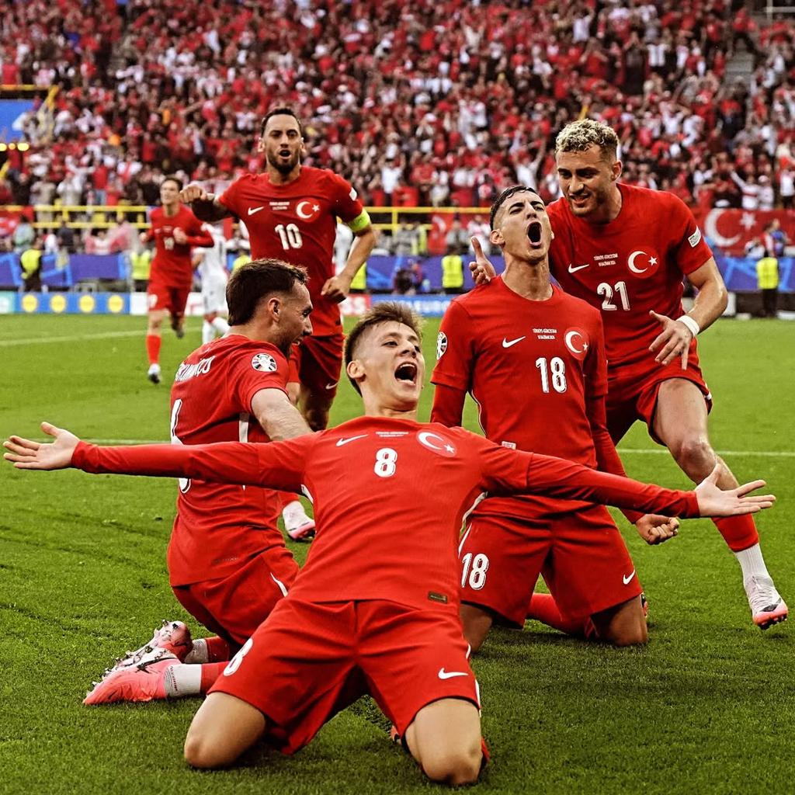
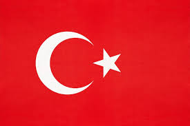

CONCACAF
Turquía

Turquía es una selección europea que ha tenido un papel importante en el fútbol internacional. Destaca por su resistencia, técnica y jugadores talentosos en ligas europeas.
Curiosidades
- Turquía participó por primera vez en un Mundial en 1950.
- Volvió a clasificar a una Copa del Mundo en 2022.
- Será uno de los países anfitriones del Mundial 2026.
- Su fútbol ha crecido gracias al desarrollo de nuevos talentos.